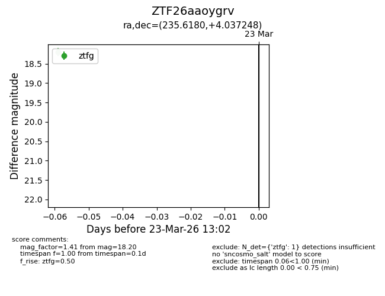
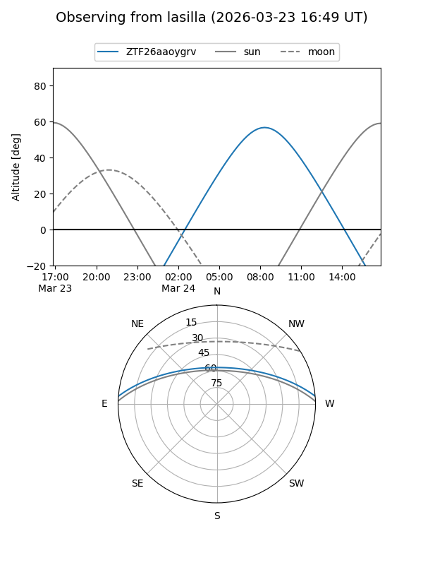
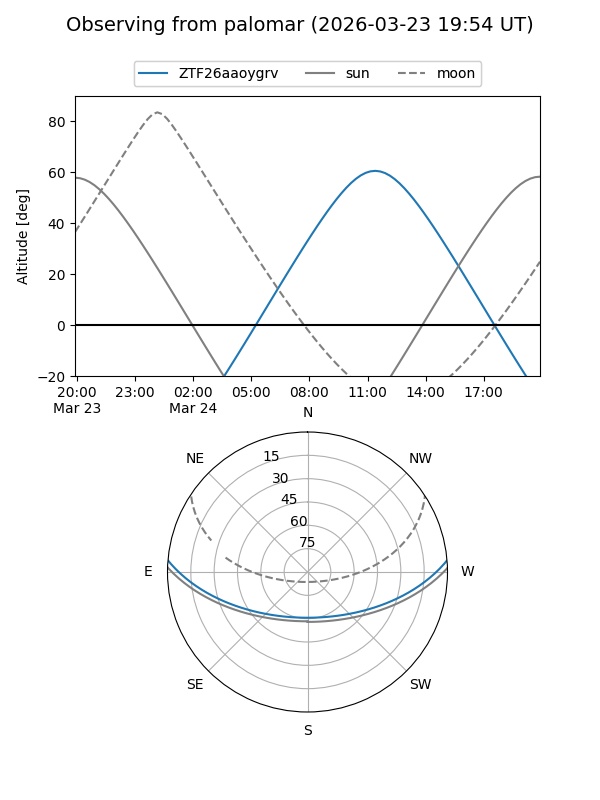

ZTF26aaoygrv
Target ZTF26aaoygrv at 2026-03-23 13:04
Aliases and brokers:
FINK: link
Lasair: link
ALeRCE: link
alt names
ZTF26aaoygrv (ztf,fink_ztf)
Coordinates:
equatorial (ra, dec) = 235.6180,+4.03725
equatorial (HMS+DMS) = 15:42:28.33,+04:02:14.09
galactic (l, b) = (11.1004,+43.15152)
Flags:
Photometry:
last ztfg=18.20
1 ztfg detections
Lightcurve

Visibility


Additional plots